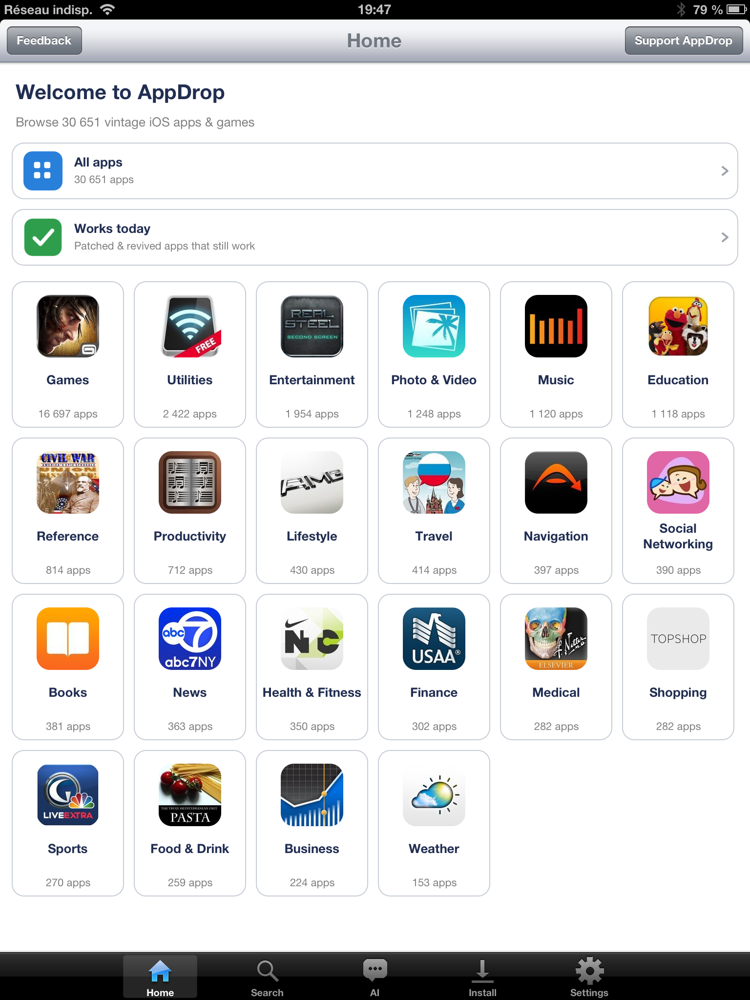
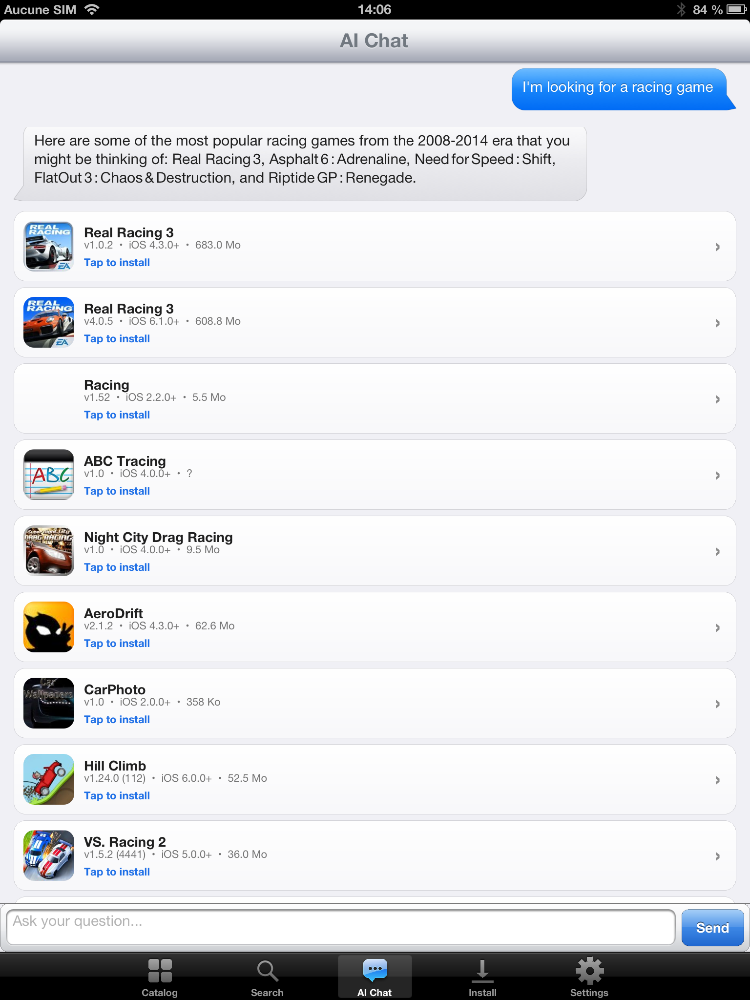
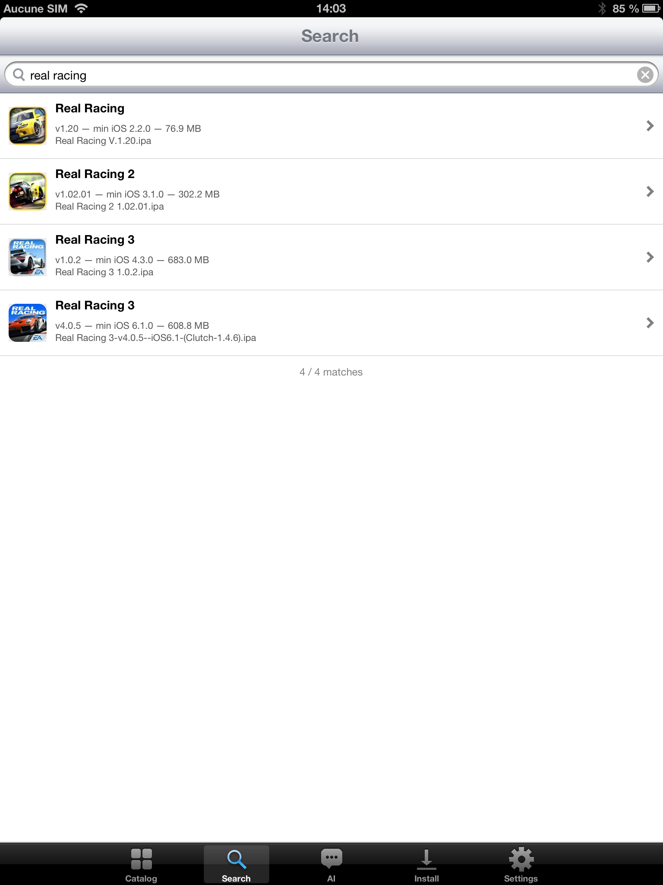
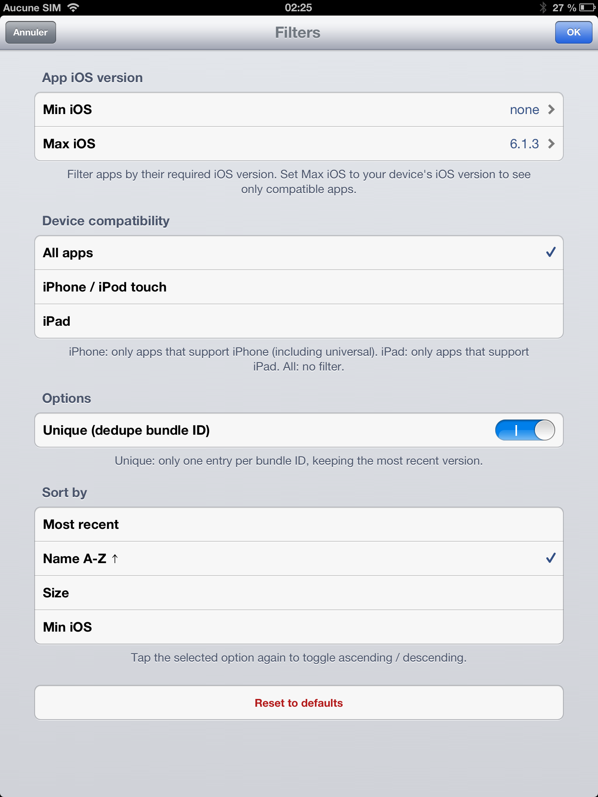
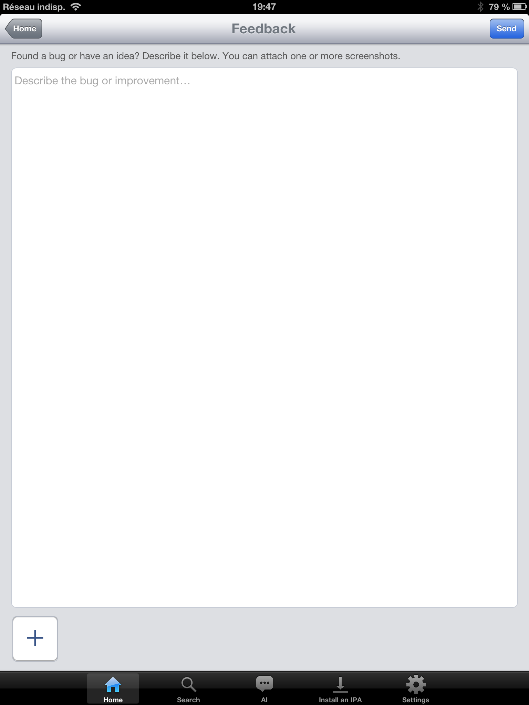

AppDrop
Browse 43,000+ vintage iOS apps (2008–2014) — every archived version included — and install them on your jailbroken device, with built-in AI search.
iOS 5 – 10 · armv7What's new v2.0
- Browse by category — a proper home screen instead of one big list
- "Works Today" — a section for apps confirmed to still run on old iOS, with one-tap install and update detection. Only one app for now, but the section is there to grow as more get added over time
- Self-updating catalog — it refreshes itself when new apps are added, so you don't reinstall the app for new content
- Device-aware — each app shows whether it'll run on your device, and it auto-picks the newest version your iOS can actually handle
- DNS-over-HTTPS — installs keep working even if your ISP blocks archive.org at the DNS level
- In-app feedback — report a bug or idea (with screenshots) from inside the app; it's filed automatically as a GitHub issue, so I see it right away
- 8 languages now, including Turkish (thanks to Yusubera on Reddit), plus localized app descriptions
- Smaller download, smoother scrolling, a downloads counter, and a setting for how many apps download at once
- Tested on iPad 1 (iOS 5.1.1), iPhone 5 (iOS 6.1.4), iPad 4 (iOS 6.1.3) — any 32-bit device from iOS 5 to 10.3.3
Full changelog: github.com/AdrienRL1/AppDrop/releases
What it does
AppDrop opens onto the IPA Archive catalog (43,000+ vintage iOS apps, with every version archived), browsable by category. The catalog is downloaded on first launch and keeps itself up to date. Search by title, describe what you want in plain language and the built-in AI finds it, or pick from the "Works today" revival list. Tap install — the app delegates to IPA Installer Console (already required by this package) and your jailbreak does the rest.
Highlights
- 43,000+ vintage apps — browse by category; downloaded once then self-updating (≈157k IPA files counting every version)
- "Works today" — apps still running on legacy iOS, with update detection (one app for now, more to come)
- Grounded AI search — describe an app in any language, the LLM picks from the real catalog (never invents)
- Device-aware — compatibility verdict per app, auto-picks the newest version your device can run
- 8 languages — EN · FR · ES · DE · PT‑BR · JA · ZH‑Hans · TR, auto-detected, with localized app descriptions
- In-app feedback — bug reports + screenshots, straight to the project
- Multi-select install — batch installs, a downloads counter, configurable max simultaneous downloads, cancel anytime
- DNS-over-HTTPS — keeps installs working on DNS-blocked networks
- Skeuomorphic iOS 6 look — fits naturally into a jailbroken device, all iOS versions
- No backend, no account, no tracking — talks directly to archive.org and pollinations.ai
Screenshots

Home — browse 30,000+ vintage apps by category

AI chat: describe an app and it finds the real ones

Search tab — instant title lookup over the whole catalog

Filters — narrow by year, device class, iOS version

In-app feedback — report a bug or idea with screenshots
Requirements
- A jailbroken device on iOS 5 → iOS 10 (armv7 / 32-bit)
- AppSync Unified — needed to install unsigned IPAs (auto-installed as a dependency)
- IPA Installer Console by autopear (or
appinst) — the actual install tool (auto-installed as a dependency) - A working internet connection for downloads and the optional AI features
Enjoying AppDrop? Free + ad-free forever.
If it saved you the trouble of manual sideloading, a small tip helps me keep maintaining the catalog 💙
💖 Tip on PayPal